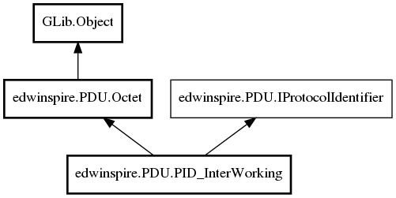

edwinspire.PDU.PID_InterWorking Reference Manual
Packages
libspire_gsm
edwinspire
PDU
PID_InterWorking
InterworkingDevice
TelematicInterWorking
PID_InterWorking
PID_InterWorking
Object Hierarchy:

Description:
public
class
PID_InterWorking
:
Octet
,
IProtocolIdentifier
Namespace:
edwinspire.PDU
Package:
libspire_gsm
Content:
Properties:
public
PID_TYPE_TELEMATIC_DEVICE
InterworkingDevice
{
set
;
get
; }
public
bool
TelematicInterWorking
{
set
;
get
; }
Creation methods:
public
PID_InterWorking
()